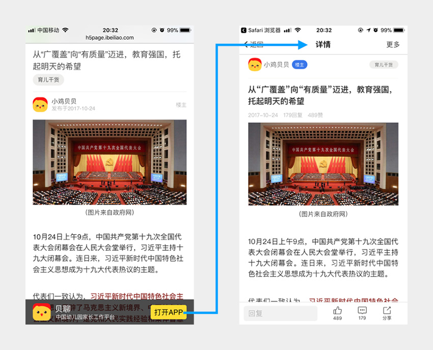

网页端「应用跳转」技术实现演变
由于网页传播的便捷性，从网页向APP导流几乎是所有APP厂商都会采用的推广手段，具体来说就是在网页上提供一些触发点（例如按钮、链接），用于跳转到APP。 … 详细内容
由于网页传播的便捷性，从网页向APP导流几乎是所有APP厂商都会采用的推广手段，具体来说就是在网页上提供一些触发点（例如按钮、链接），用于跳转到APP。 … 详细内容
Javascript是单线程运行、支持异步机制的语言。进入正题之前，我们有必要先理解这种运行方式。以「起床上班」的过程为例，假设有以下几个步骤： 起床（10min）、洗刷（10min）、换衣（5min）、叫车（10min）、上班（15min）。最简单粗暴的执行方式就是按顺序逐步执行，这样从起床到上班共需50分钟，效率较低。如果能在「洗刷」之前先「叫车」，就可以节省10分钟的等车时间。 这样一来「叫车」就成了异步操作。但为何只有「叫车」可以异步呢？因为车不需要自己开过来，所以自己处于空闲状态，可以先干点别的。 … 详细内容